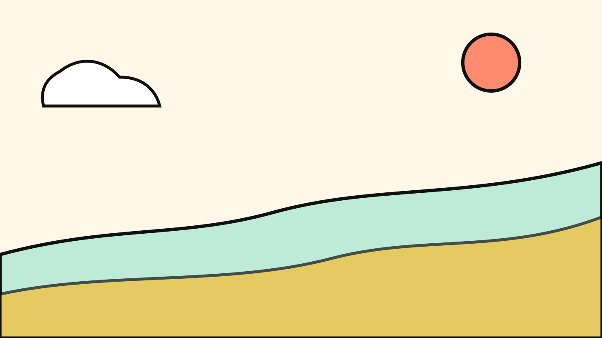
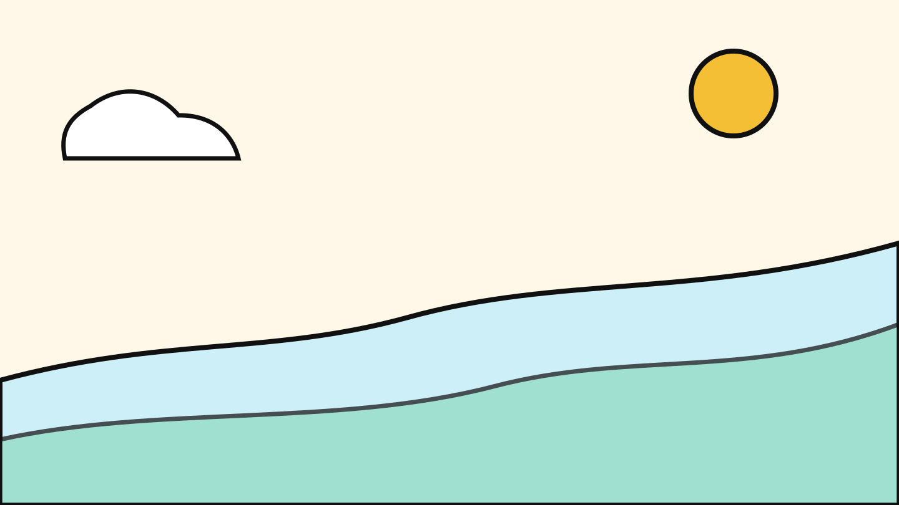
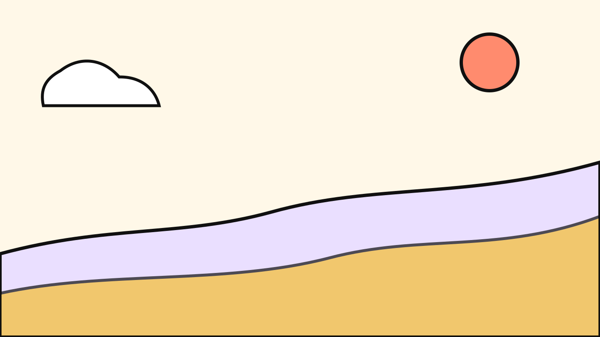
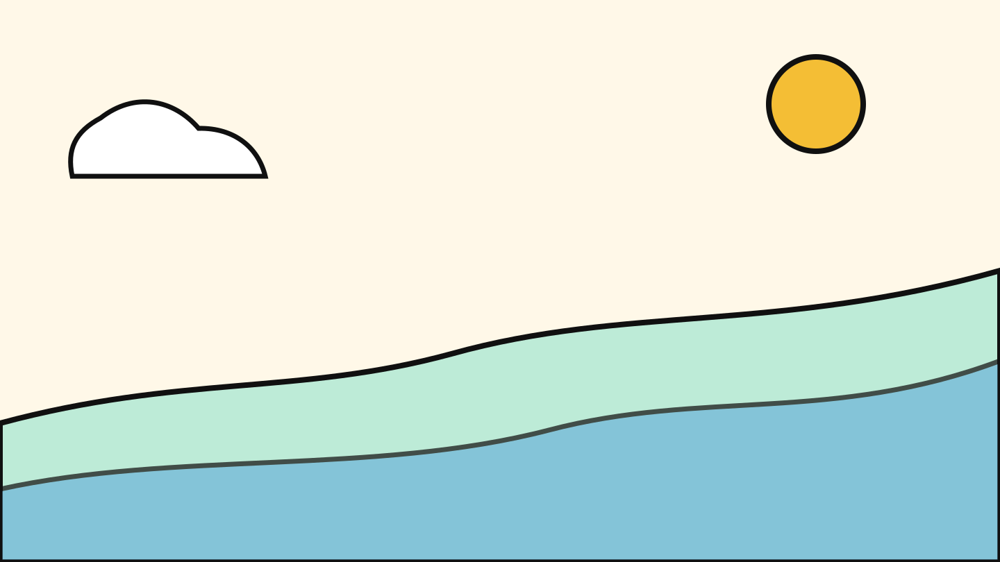
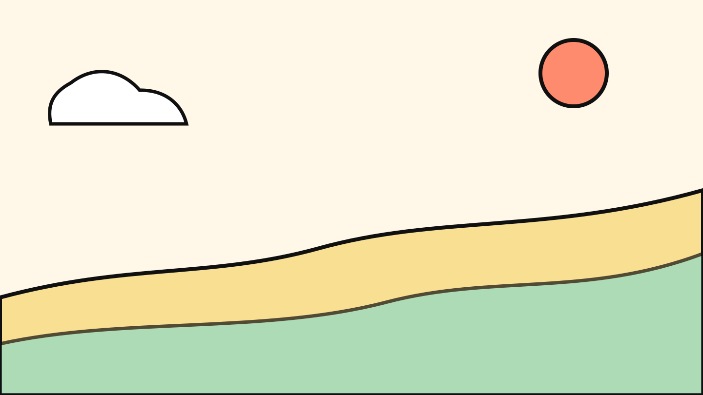
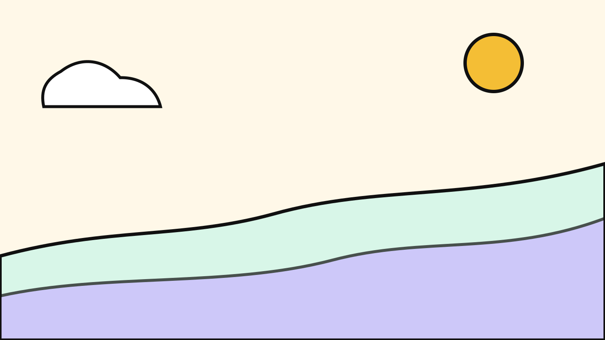
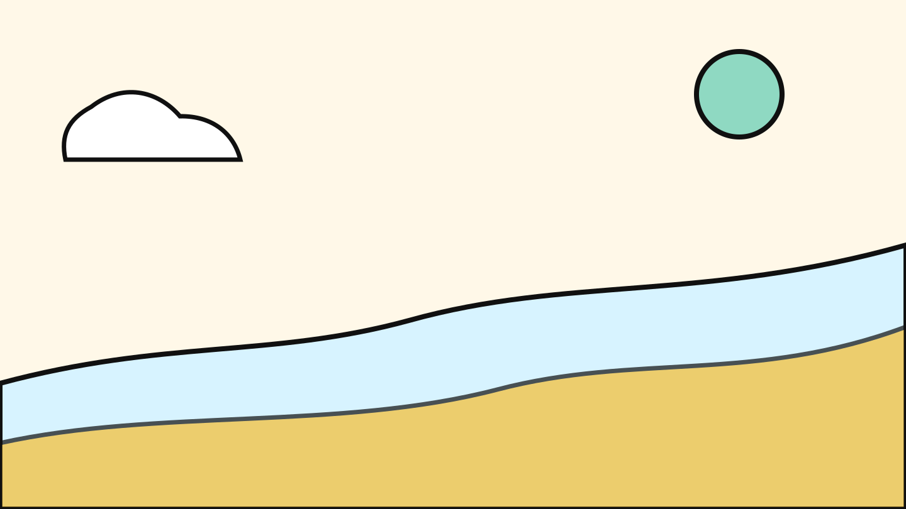

NORDIC CHILDHOOD
回不去的
小时候
那时候时间走得很慢，冰棍化得很快，快乐通常不需要说明书。
长大以后才发现：小时候不是一个地点，是一种再也调不回来的亮度。
嘿！
咻——

01 / 风筝
童年像一只跑丢的风筝
你还记得它的颜色，却已经找不到那根线。它飞得不算高，但一直在心里晃来晃去。
重点：不要把怀旧讲成沉重，讲成“找不到线”的小小好笑。
02 / 小小富翁
小时候的富有，是口袋里有三颗糖
没有余额、没有 KPI、没有年度计划。只要还有一颗糖没吃，今天就还没有输。
好耶

03 / 慢时间
时间那时很慢，慢到足够发呆
一个暑假像一片大陆，一节课间像一场旅行。我们趴在窗边，看云慢慢变成各种奇怪的东西。
长大后，时间不是变快了，是被切成了很多待办事项。
04 / 课桌宇宙
课桌里藏着一个小宇宙
铅笔屑、弹珠、没写完的纸条、被老师没收前的漫画。那些乱七八糟，其实是我们最早的收藏馆。
“大人叫它杂物，小孩叫它宝藏。”
北欧绘本风的关键不是画复杂，而是把普通东西画得像刚刚有了生命。

05 / 长大以后
我们没有变无趣，只是笑点开始加班
小时候摔一跤会哭，过一会儿又去追风。长大后摔一跤不哭了，但会默默查：这算不算工伤。
轻松幽默，是这套模板的情绪底色。
ENDING
回不去，但可以把它画回来
童年不是用来复原的，是用来提醒我们：快乐可以很简单，世界也可以画得歪一点。
下次需要“北欧童话绘本风”，就从这个 deck 开始。